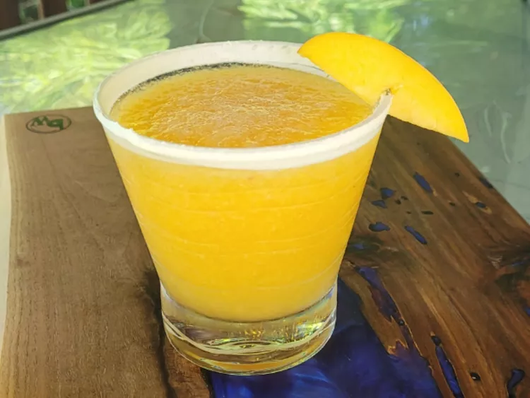

Peaches and Cream Cocktail | Main Page

This delightful peaches and cream cocktail embodies the essence of summer. Fresh peaches, peach schnapps, and vodka blend together in this uncomplicated yet delicious frozen beverage.
Ingredients
- 1 cup ice
- 1 1/2 cups peeled and chopped fresh peaches
- 1/4 cup peach schnapps
- 1/4 cup whipped vodka
- frozen whipped topping (such as Cool Whip®), thawed, for rim
- peach slice for garnish
Steps
- Place ice in a blender and crush for 15 to 20 seconds. Add fresh peaches, peach schnapps, and whipped vodka. Blend until smooth.
- Rim glass with frozen whipped topping. Pour cocktail into glass and serve garnished with peach slice.